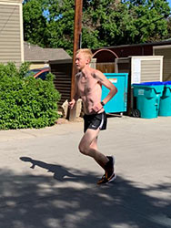
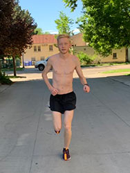

My Gear
One thing that many people don’t realize about running is that there is a lot of technology, benefits, and reasons to have the specific gear that runners do. There are a lot of pieces to take into consideration, however compared to other sports, the gear is relatively cost efficient. I have plenty of personal preferences when it comes to what I use on running, but keep in mind, everyone is different and enjoys their own gear.
My Shoes
Nike Zoom Pegasus 35/35 Turbo - My go to trainers for everyday runs, are the Nike Zoom Pegasus 35, and the Pegasus 35 Turbo. I own and run in both of these shoes. Both shoes are a very good choice for easy days or long runs. The difference between the two is that the Pegasus 35 is a bit less expensive for a tradeoff of being a bit heavier, with a slightly less cushion. The Turbos have a specially engineered type of foam, and feel much more responsive.
Nike Zoom Fly and Vaporfly Flyknit - For the past year or so, I have been dedicating the Nike Zoom Fly to my race day shoe. The technology in this shoe allows for optimal running when it comes to breaking my personal record. The Zoom Fly has a nylon infused carbon plate running through the length of the shoe. This gives the shoe a very stiff feel. The purpose of this is to keep the user on their toes by using the stiff design to roll through each stride. This allows the momentum to always be traveling forward, helping me reach the times I strive for. The Vaporfly Flyknit shoes have a very similar design, but are a bit more expensive for a more responsive and bouncy design. I plan on transitioning into these shoes in the near future, as they are one of the best racing shoes an everyday runner could buy.
My Watch
The only watch that I have used over my years of running is the Nike Apple Watch. Many argue that brands like Garmin and TomTom are superior to the Apple Watch. However, through my personal experience I have definitely fallen in love with this watch, especially as an iPhone user. It offers a lot of customization, gives real time notifications, and is a great running watch for tracking miles through the Nike app. I can see all of my runs sync with the app on the phone to give a more detailed summary of the run, but the watch offers many of these details from the second after I finish my run.
My Shorts
The shorts that I always reach for when the weather is appropriate are Nike split short shorts. To be honest, it took a lot of time for me to come to terms with wearing short shorts on my runs, however, after I managed to wear them for the first time, I can never go back. Nike split short shorts are very lightweight and breathable, and the split design offers comfort that I believe regular shorts can never top.